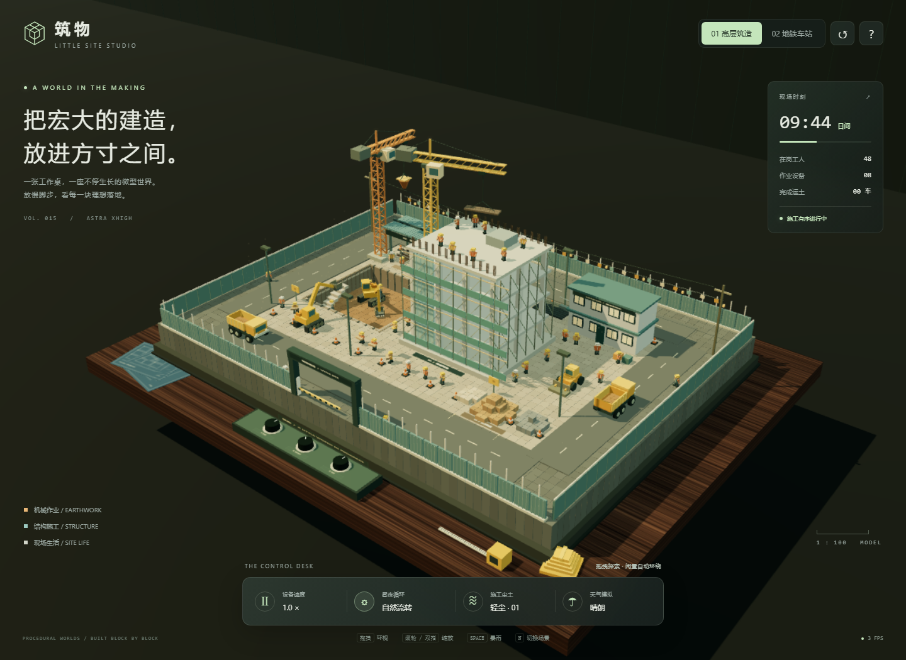

筑物 / LITTLE SITE STUDIO · GPT 6 Astra Xhigh
原始提示词
新建项目文件夹，相关文档，修改项目相关文件，模型 gpt6 astra xhigh，任务：用 WebGL (Three.js r160 CDN) 创作一个体素微缩建筑工地沙盘场景，输出为可直接在 Chrome 打开的单个 HTML 文件，不引用任何外部资源，全部几何体、材质、贴图使用代码生成，目标稳定 60FPS，杜绝物体穿模。 场景载体：整套工地微缩模型摆放在室内深色实木工作桌面上，桌面边角散落蓝图图纸、钢卷尺、安全帽摆件、金属水平仪，第三人平视人眼高度视角观察整个沙盘。 工地主体布局：完整施工工地，划分基坑开挖区、钢筋加工棚、物料堆放区、在建高层楼房基座、临时板房办公区、渣土堆放区、临时施工道路。 动态机械设备：多台体素挖掘机持续作业，铲斗往复挖掘基坑土方；轮式渣土卡车循环行驶，开到挖掘机旁接土，满载后驶往渣土堆卸料；多台塔式塔吊回转吊起重钢筋、混凝土料斗，来回吊运物料；混凝土搅拌罐车缓慢行驶，小型装载机平整地面。 人物与细节：大量体素工人各司其职，有的绑扎钢筋、有的搬运建材、有的指挥塔吊、有的操作小型工具、安保人员在出入口巡逻；工地设置围挡、警示彩旗、施工指示灯、临时照明灯、脚手架、堆叠钢筋、水泥堆、砂石料堆、施工围挡大门、临时水电杆、安全警示标识。 环境与昼夜系统：完整日夜循环，黎明、正午、黄昏、夜晚四套天色；夜晚工地探照灯、塔吊灯、板房窗户向外发出暖辉光；尘土粒子效果缓缓飘散。 交互系统：鼠标拖拽环视相机，闲置时自动缓慢环绕场景；鼠标滚轮缩放视角；鼠标点击桌面前方实体模拟控制旋钮开关：调节工地设备运行速度、开关昼夜循环、切换施工尘土强度；按下空格键触发模拟暴雨天气，雨滴粒子、地面湿滑反光，工地灯光亮度提升。 技术要求：大量物体使用 InstancedMesh 实例化批渲染提升性能；自定义 shader 实现尘土粒子、灯光光晕；所有运动物体做好碰撞约束，不发生穿插穿模；全部工地元素限定在沙盘桌面范围之内，不会超出场景边界。色彩丰富，体素方块颗粒质感明显，细节饱满。添加新场景进去
项目说明
- 模型：GPT 6 Astra Xhigh
- 日期：2026-09-16
- 项目类型：单 HTML / Three.js WebGL 体素微缩场景
- 入口文件：index.html
- 运行方式：Chrome 直接打开
index.html，也可通过 GitHub Pages 的目录路径访问。无需安装依赖或构建。 - 资源约定：仅加载提示词指定的 Three.js r160 CDN。其余几何体、木纹、蓝图、标识、环境反射纹理、尘土与光晕均由代码生成，没有外部图片、模型、字体或其他脚本。首次打开需要联网，此版本不是完全离线文件。
场景
01 高层筑造
四层混凝土框架、未封顶核心筒、脚手架、安全网与屋顶预留钢筋。基坑保留开口地形、挡土墙与上下台阶，两台挖掘机在分离的作业范围内循环运行。
02 地铁车站
开放式车站剖面，包含围护墙、双侧站台、轨道、枕木、跨坑支撑和施工楼梯。切换后屋顶工人重新安排到站台上，保留整个配套工地、车辆、时间和天气状态。
共同细节
- 深色实木桌、程序化蓝图、钢卷尺、体素安全帽、金属水平仪和三只实体控制旋钮。
- 基坑、钢筋加工棚、堆料区、主体结构、两层办公板房、土方转运区及闭环道路。
- 48 名体素工人：绑扎、搬运、指挥、工具操作、现场交流、入口及边界巡逻。
- 8 台机械：双挖掘机、双塔吊、双渣土车、搅拌罐车和装载机。挖掘机接土与卡车停靠同步，卸料采用侧倾车斗；短生命周期土粒表现物料转移。
- 围挡、出入口横杆、彩旗、警示锥、安全标识、水电杆及架空线、探照灯、塔吊灯和暖色板房窗户。
操作
| 操作 | 功能 |
|---|---|
| 鼠标 / 单指拖拽 | 围绕沙盘旋转视角 |
| 滚轮 / 双指捏合 | 缩放，带距离和俯仰限制 |
| 闲置 8 秒 | 镜头缓慢环绕；系统减少动态效果偏好会关闭自动环绕 |
| 速度旋钮 / 设备速度按钮 | 1× → 2× → 4× → 暂停 |
| 昼夜旋钮 / 昼夜循环按钮 | 开关 240 秒完整日夜循环，关闭时定格当前光照 |
| 尘土旋钮 / 施工尘土按钮 | 轻尘 → 扬尘 → 无尘 |
天气模拟按钮 / Space |
暴雨开关：雨滴、湿地反光、涟漪、增强照明与尘土抑制 |
场景按钮 / N |
高层筑造与地铁车站切换 |
重置按钮 / R |
返回默认桌边观察视角 |
P |
暂停 / 恢复机械和工人，天气与昼夜继续运行 |
? / Escape |
打开 / 关闭操作说明 |
屏幕控制与实体旋钮保持同步，支持键盘焦点与状态反馈。移动端保留四个主控制按钮。
技术实现
- 静态场景与动态部件按几何体和材质组合使用
InstancedMesh，包括车辆、机械臂和工人的四肢。动态部件通过变换层级更新实例矩阵，无需逐个提交网格绘制。 - 两套主体建筑预先生成，仅切换对应批次可见性，不在切换时重新分配 GPU 资源。
- 尘土、光晕、雨线和积水涟漪使用自定义
ShaderMaterial。雨线在地面、基坑、建筑和棚顶高度截断；程序化环境纹理与路面粗糙度变化表现雨后反光。 - 单个阴影光源、2048 阴影贴图，4 盏工地灯及 1 盏板房外溢灯不投射阴影。像素比最高 1.5；持续低帧率时逐档降低分辨率，恢复稳定后缓慢回升。
- 页签隐藏时停止推进模拟；单帧时间步长上限 50 毫秒，避免切回窗口后机械跳跃。页面处理 CDN 加载失败与 WebGL 上下文丢失。
运动与碰撞约束
- 车辆采用按弧长参数化的单向圆角道路，以同一帧的位置计算前车距离，并保留 4.4 单位车距。装卸停靠车辆会使后车排队，渣土车在卸料点小幅进入卸料带。
- 挖掘机采用两段机械臂逆运动学，限制铲斗目标位置；装车时先提臂，再回转，到位后卸土。两台挖掘机使用独立工作区。
- 两台塔吊的回转圆盘分开，主塔吊放在楼房外侧，吊物最低高度高于屋顶核心筒、钢筋和工人。工人活动区与车辆道路、挖掘机作业区分别布置。
- 装载机沿独立的短距离路线往复作业；车辆、塔吊臂、工人及粒子限制在沙盘边界内。相机保持在模型外观察。
- 采用确定路线、空间预留、车距约束与目标范围约束，不包含通用刚体物理引擎。几何采样验证已覆盖的循环，不代表对所有部件接触与全部状态的穷尽证明。
- 60 FPS 为性能目标，实际表现取决于设备、分辨率和浏览器。右下角显示真实帧循环的测量结果，避免将目标帧率作为固定显示值。
验证
2026-09-16，使用 Playwright 驱动 Chrome for Testing 153.0.8010.12 检查：
node --check index.js、单 HTML 内联脚本语法检查及git diff --check通过。- 本地静态服务器：首页项目总数 15，首屏 9 项；加载更多、分类筛选、Astra Xhigh 搜索、名称 / 最近加入排序、网格 / 列表切换、无结果重置均通过。新增项目生成的 HTML 与 README 链接均返回 HTTP 200。
- Chrome
file://直接打开与 HTTP 目录入口均通过。网络请求仅包含指定的 Three.js CDN；拦截 CDN 后能显示明确的加载失败提示。 - 速度四档、机械暂停、昼夜定格、三档尘土、场景切换、暴雨和快捷键均通过。三只实体旋钮通过实际屏幕坐标射线点击验证，拖拽与滚轮缩放通过。
- 1440×960 桌面、390×844 手机及 844×390 横屏检查通过，无水平溢出，主控制按钮均在可见区域内。使用 Chrome DevTools Protocol 注入真实双指触控验证捏合缩放与手势释放，最大缩远距离仍在远裁剪面内。
- 以 50 毫秒步长推进 480 秒模拟，覆盖两套场景、两个完整昼夜周期及 10 次运土；每 0.5 秒采样一次运动部件包围盒。采样中未发现车辆互相穿插、车辆越界、两个铲斗相交或主塔吊吊物低于屋顶工人的情况。车辆最小中心距离约 3.75，沿路线最小车距约 4.44；铲斗最低点高于坑底约 0.09，主塔吊吊物最低点约 8.065，高于屋顶与工人。
- 日间、夜间、高层、地铁和暴雨状态均未发现 JavaScript 或着色器错误。最终修改后复查夜间暴雨、移动端与资源失败状态通过。
- 本机无头 Chrome 的 1440×960、像素比 1 样本约 165 FPS；约 49–50 次绘制调用，5,402 个预构建实例，约 6.4–6.7 万三角形。该帧率来自真实动画帧，480 秒加速采样不计入性能样本；其他设备不保证相同帧率。
验证采用确定配置与有限采样，未将通用刚体碰撞或全设备稳定 60 FPS 作为已证明结论。
预览截图

<!-- archive:start -->
当前归档信息（自动生成）
- 实验 ID：
voxel-construction-site--gpt-6-astra-xhigh-r01 - 模型：GPT-6 Astra；推理档位：xhigh
- 类型：single-html；预览：static；网络：required
- 完整原始输入快照 · 主题与其他版本
- 输入记录：保留文档中的原始输入；其他会话上下文未记录。
- 工具：未记录。来自历史实验说明；未记录的设置不作推测。
- 运行方式：浏览器直接打开本目录入口；CDN/外部素材需要联网。
- 费用记录：OpenAI · ChatGPT Plus 订阅；单案例货币金额未记录。据用户说明，OpenAI 模型通过 ChatGPT Plus 订阅测试；全部案例完成后，五小时额度未耗尽。未提供单案例费用金额。
- 主页面
部署适配记录
无新增实现改动。 <!-- archive:end -->